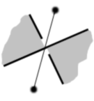
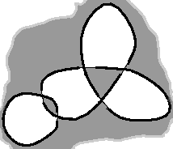
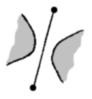

Nehmen Sie an, Sie finden einen Knoten, der Ihnen gefällt, z.B. den folgenden (okay, ich könnte einen besseren nehmen; aber es ist ja nur ein Beispiel):

Sie möchten ihn nachmalen oder ihn Ihren Bedürfnissen anpassen. Am besten geht das, wenn Sie den Graphen, der ihm zugrunde liegt, herausarbeiten (extrahieren). Dazu färben Sie die verschiedenen Flächen im und um den Knoten mit Schwarz und Weiß, wie ein Schachbrett. Beginnen Sie damit, die Außenfläche schwarz zu malen, dann schwärzen Sie die Fläche, die einem Fadenkreuz jeweils gegenüberliegt. Sie erhalten folgendes Bild:

Konstruieren Sie jetzt den Graphen, indem Sie seine Seiten und Eckpunkte einzeichnen. Setzen Sie in jede weiße Fläche einen Eckpunkt und ziehen Sie die Seiten von einer Ecke zur anderen genau über die Kreuzpunkte, die die schwarzen Flächen voneinander trennen.

Ist dies einmal geschafft, vergleichen Sie jede Überkreuzung mit den beiden Hilfszeichnungen, der mit der durchgezogenen und der mit der gestrichelten Linie, um zu sehen, um was für eine Überkreuzung es sich handelt.
|  | oder |
 |

Es ist wichtig, dass Sie verstehen, wie die Mauern im Gitterwerk wirken, denn es kann sein, dass sie ein kompliziertes Gitter erhalten, das eigentlich ein einfaches Gitter mit nur ein paar Mauern ist. Im folgenden Beispiel können Sie sehen, dass eine Tür mit einer Mauer zu verschließen bedeutet, die beiden Fadenenden einer Seite zu verbinden, während eine Mauer quer zur Seite zu setzen bedeutet, diese Seite quasi zu entfernen.


| Sie können | „unbrauchbar“ | Linien anhängen |
|
|
oder |  |
Ist dies einmal begriffen, können Sie dazu übergehen, größere Flechtwerke mit Hilfe der Einrahmung zu konstruieren.